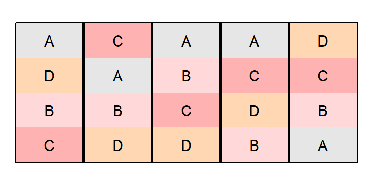
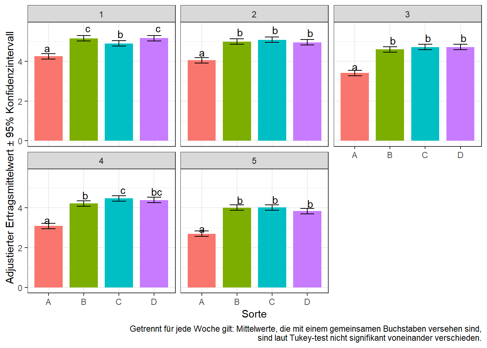

Messwiederholungen
library(data.table) # bessere Datenmanipulation
library(nlme) # generalisiertes Modell package
library(emmeans) # adjustierte Mittelwerte
library(ggplot2) # bessere PlotsDatensatz
In diesem Experiment wurde in einer randomisierten vollständigen Blockanlage (RCBD) mit 5 Wiederholungen der Blattflächenindex von 5 Sorghumsorten verglichen. Allerdings wurde der Blattflächenindex mehrfach, nämlich in 5 aufeinanderfolgenden Wochen, gemessen, sodass Messwiederholungen vorliegen.
Dieses Beispiel basiert auf Example 4 des
agriTutorialpackages und der dazugehörigen Veröffentlichung
Piepho, H. P., & Edmondson, R. N. (2018). A tutorial on the statistical analysis of factorial experiments with qualitative and quantitative treatment factor levels. Journal of Agronomy and Crop Science.

Messwiederholungen werfen eine Neuerung gegenüber den vorangegangenen Beispielen auf: zum ersten Mal ist die kleinste Randomisationseinheit (=Parzelle) nicht gleichzeitig die Beobachtungseinheit, da wir mehrere Beobachtungen pro Parzelle haben. Der wichtige Punkt hier ist, dass der Faktor Woche nicht randomisiert werden kann. Statt der üblichen Annahme von unabhängigen Messwerten, sind Messwerte derselben Parzelle von aufeinanderfolgenden Wochen wahrscheinlich miteinander korreliert. Um dies zu modellieren, soll im ersten Schritt vorerst das Modell für die Analyse einer einzelnen Woche aufgestellt werden.
print(repmes, nrows=10)## week gen rep plot y
## 1: 1 A rep1 plot1 5.00
## 2: 1 D rep1 plot2 5.86
## 3: 1 B rep1 plot3 5.82
## 4: 1 C rep1 plot4 5.65
## 5: 1 C rep2 plot5 5.39
## ---
## 96: 5 B rep4 plot16 3.99
## 97: 5 D rep5 plot17 2.96
## 98: 5 C rep5 plot18 3.00
## 99: 5 B rep5 plot19 2.95
## 100: 5 A rep5 plot20 2.16str(repmes)## Classes 'data.table' and 'data.frame': 100 obs. of 5 variables:
## $ week: Factor w/ 5 levels "1","2",""..
## $ gen : Factor w/ 4 levels "A","B",""..
## $ rep : Factor w/ 5 levels "rep1","r"..
## $ plot: Factor w/ 20 levels "plot1","..
## $ y : num 5 5.86 5.82 5.65 5.39 4...
## - attr(*, ".internal.selfref")=<exter..
## - attr(*, "index")= int
## ..- attr(*, "__week")= intAnalyse einer einzelnen Woche
Wenn wir jede Woche separat analysieren, umgehen wir das Problem der korrelierten Messwerte und können das übliche Modell für eine einfaktorielle Varianzanalyse in einem RCBD aufstellen ( siehe Beispiel ).
Manuelles wählen der Woche
Dann müssen wir lediglich einen Teildatensatz mit den Daten von nur einer Woche erstellen und auswerten.
repmes.wk1 <- repmes[week=="1"] # Nur Daten der ersten Woche
mod.wk1 <- lm(y ~ gen + rep, data=repmes.wk1)
anova(mod.wk1)## Analysis of Variance Table
##
## Response: y
## Df Sum Sq Mean Sq F value Pr(>F)
## gen 3 2.7604 0.92012 46.59 6.918e-07 ***
## rep 4 8.3190 2.07974 105.31 3.086e-09 ***
## Residuals 12 0.2370 0.01975
## ---
## Signif. codes: 0 '***' 0.001 '**' 0.01 '*' 0.05 '.' 0.1 ' ' 1So erhalten wir also die Ergebnisse der Varianzanalyse für die erste Woche und könnten wie gewohnt fortfahren indem wir adjustierte Mittelwerte für den signifikanten Faktor Sorte berechnen.
Analyse in einem Loop
Anstatt die 5 Teildatensätze der 5 Wochen separat und manuell zu erstellen, können wir eine Schleife (Loop) schreiben, die automatisch eine Woche nach der anderen analysiert. Zusätzlich können wir in R eine Liste erstellen, in der die Ergebnisse aller durch den Loop generierten Varianzanalysen gespeichert werden.
anova.liste <- list() # erstelle ein leeres Listenobjekt
for (wochen.nr in c("1", "2", "3", "4", "5")){ # Loop Anfang
repmes.wkX <- repmes[week==wochen.nr]
mod.wkX <- lm(y ~ gen + rep, data=repmes.wkX)
anova.liste[[wochen.nr]] <- anova(mod.wkX)
} # Loop Ende
anova.liste[["1"]] # Zeige ANOVA der 1. Woche## Analysis of Variance Table
##
## Response: y
## Df Sum Sq Mean Sq F value Pr(>F)
## gen 3 2.7604 0.92012 46.59 6.918e-07 ***
## rep 4 8.3190 2.07974 105.31 3.086e-09 ***
## Residuals 12 0.2370 0.01975
## ---
## Signif. codes: 0 '***' 0.001 '**' 0.01 '*' 0.05 '.' 0.1 ' ' 1anova.liste[["5"]] # Zeige ANOVA der 5. Woche## Analysis of Variance Table
##
## Response: y
## Df Sum Sq Mean Sq F value Pr(>F)
## gen 3 5.9977 1.99924 97.196 1.099e-08 ***
## rep 4 4.3410 1.08526 52.762 1.619e-07 ***
## Residuals 12 0.2468 0.02057
## ---
## Signif. codes: 0 '***' 0.001 '**' 0.01 '*' 0.05 '.' 0.1 ' ' 1Analyse des gesamten Datensatzes
 Der Nachteil der separaten Analyse einzelner Wochen wird besonders deutlich, wenn wir uns vorstellen, dass wir Messwerte von sehr viel mehr Wochen hätten, deren ANOVAs nicht immer die gleichen Signifikanzen zeigen: Es kann schwierig sein eine wochenübergreifende Antwort zu geben. Außerdem wurde durch das separate Analysieren auch immer nur ein Bruchteil der Informationen genutzt. Demnach ist es erstrebenswert den Datensatz als ganzes mit einem geeigneten Modell auszuwerten. Dafür müssen wir Korrelationen zwischen den Fehlertermen verschiedener Wochen erlauben. Die Grafik, die aus dem oben erwähnten Artikel stammt, soll dies verdeutlichen.
Der Nachteil der separaten Analyse einzelner Wochen wird besonders deutlich, wenn wir uns vorstellen, dass wir Messwerte von sehr viel mehr Wochen hätten, deren ANOVAs nicht immer die gleichen Signifikanzen zeigen: Es kann schwierig sein eine wochenübergreifende Antwort zu geben. Außerdem wurde durch das separate Analysieren auch immer nur ein Bruchteil der Informationen genutzt. Demnach ist es erstrebenswert den Datensatz als ganzes mit einem geeigneten Modell auszuwerten. Dafür müssen wir Korrelationen zwischen den Fehlertermen verschiedener Wochen erlauben. Die Grafik, die aus dem oben erwähnten Artikel stammt, soll dies verdeutlichen.
Die AR1 Varianzstruktur
Standardmäßig haben lineare Modelle unabhängige, identisch verteilte Fehler (independent and identically distributed, kurz IID). Um also nun korrelierte Fehler zu modellieren kann man eine Varianzstruktur für die Fehler annehmen. Es gibt verschiedene Varianzstrukturen ( siehe hier ), wobei die wahrscheinlich populärste für Messwiederholungen den Namen first order autoregressive, kurz AR1 trägt.
Um lineare Modelle anzupassen, die eine andere Varianzstruktur als IID annehmen, wird die Verallgemeinerte Kleinste-Quadrat-Schätzung (engl. generalized least squares kurz GLS) angewandt. Das nlme package hat dafür die Funktion gls(). Um das hier benötigte Modell aufzustellen können wir vorerst mit dem dem Modell aus der separaten Analyse der Wochen beginnen: y ~ gen + rep. Zur Erinnerung: Auch wenn wir es nicht explizit ins Modell geschrieben haben, so wird standardmäßig auch ein Intercept \(\mu\) angepasst. Um dieses Modell für die Analyse mehrere Wochen zu erweitern, können wir jeden Effekt (also auch \(\mu\)) zusätzlich wochenspezifisch definieren: y ~ week + gen + week*gen + rep + week*rep. Wir erhalten nun also zusätzlich je ein Intercept, einen Genotyp-Effekt und einen Wiederholungseffekt pro Woche. Man kann die Syntax für dieses Modell wie folgt abkürzen und trotzdem dieselben Effekte anpassen lassen:
mod.iid <- gls(y ~ week * (gen + rep),
data = repmes)Schließlich wollen wir noch dafür sorgen, dass die Fehler desselben Plots zwsichen den Wochen autokorreliert sind, was mit dem Argument corr = corExp(form = ~ week|plot) funktioniert.
mod.ar1 <- gls(y ~ week * (gen + rep),
corr = corExp(form = ~ week|plot),
data = repmes)Wir können die geschätzten Fehlervarianz und -korrelation einsehen:
mod.iid$sigma^2 # IID.var ## [1] 0.02317583mod.ar1$sigma^2 # AR1.var ## [1] 0.02317583as.numeric(exp(-1/coef(mod.ar1$modelStruct$corStruct, unconstrained=F))) # AR1.cor## [1] 0.7776763Die Korrelation wurde also auf 0.78 geschätzt, was darauf hindeutet, dass diese Varianzstruktur in der Tat für die Modellierung der Daten geiignet ist. Um in solchen Fällen zu entscheiden ob das AR1-Modell tatsächlich dem IID-Modell vorzuziehen ist, können hier die AIC (Akaike Information Criterion) Werte verglichen werden. Dabei gilt, dass das Modell mit dem kleineren AIC-Wert das bessere ist. Zu beachten ist außerdem, dass nur Modelle, die die gleichen festen Effekte haben, mittels AIC-Wert verglichen werden sollten.
AIC(mod.iid)## [1] 78.26137AIC(mod.ar1)## [1] 38.37925Der deutlich kleinere AIC-Wert bestätigt also die Vermutung, dass hier eine AR1 statt der üblichen IID Struktur für die Fehler angepasst werden sollte. Es muss klar sein, dass an dieser Stelle natürlich auch die AIC-Werte der Modelle mit anderen Varianzstrukturen verglichen werden könnten. Dies soll hier allerdings nicht getan werden um das Beispiel kurz zu halten.
Schließlich können wir wie gewohnt eine ANOVA durchführen um den F-Test für den Behandlungsfaktor durchzuführen - nur eben für das selektierte AR1-Modell. Residuenplots kann man für gls() Objekte z.B. vie plot(mod.ar) und qqnorm(resid(mod.ar)); qqline(resid(mod.ar)) erhalten.
anova(mod.ar1)## Denom. DF: 60
## numDF F-value p-value
## (Intercept) 1 21284.944 <.0001
## week 4 738.198 <.0001
## gen 3 88.053 <.0001
## rep 4 94.361 <.0001
## week:gen 12 14.975 <.0001
## week:rep 16 6.077 <.0001Alle Effekte sind laut F-Test signifikant, relevant ist dabei aber vor allem week:gen. Analog zur Vorgehensweise bei einer signifikanten Wechselwirkung von zwei Behandlungseffekten (siehe hier) gilt auch hier, dass die adjustierten Mittelwerte für week:gen und nicht für gen berechnet werden sollten.
Multipler Mittelwertvergleich
means <- emmeans(mod.ar1, pairwise ~ gen|week, adjust="tukey")
means <- CLD(means$emmeans, details=TRUE, Letters=letters)
means$emmeans # Sorten-Mittelwerte pro Woche## week = 1:
## gen emmean SE df lower.CL upper.CL .group
## A 4.242 0.06808206 60 4.105816 4.378184 a
## C 4.888 0.06808206 60 4.751816 5.024184 b
## B 5.148 0.06808206 60 5.011816 5.284184 c
## D 5.154 0.06808206 60 5.017816 5.290184 c
##
## week = 2:
## gen emmean SE df lower.CL upper.CL .group
## A 4.046 0.06808206 60 3.909816 4.182184 a
## D 4.944 0.06808206 60 4.807816 5.080184 b
## B 4.980 0.06808206 60 4.843816 5.116184 b
## C 5.074 0.06808206 60 4.937816 5.210184 b
##
## week = 3:
## gen emmean SE df lower.CL upper.CL .group
## A 3.406 0.06808206 60 3.269816 3.542184 a
## B 4.594 0.06808206 60 4.457816 4.730184 b
## D 4.706 0.06808206 60 4.569816 4.842184 b
## C 4.714 0.06808206 60 4.577816 4.850184 b
##
## week = 4:
## gen emmean SE df lower.CL upper.CL .group
## A 3.086 0.06808206 60 2.949816 3.222184 a
## B 4.220 0.06808206 60 4.083816 4.356184 b
## D 4.388 0.06808206 60 4.251816 4.524184 bc
## C 4.476 0.06808206 60 4.339816 4.612184 c
##
## week = 5:
## gen emmean SE df lower.CL upper.CL .group
## A 2.700 0.06808206 60 2.563816 2.836184 a
## D 3.834 0.06808206 60 3.697816 3.970184 b
## B 4.008 0.06808206 60 3.871816 4.144184 b
## C 4.018 0.06808206 60 3.881816 4.154184 b
##
## Results are averaged over the levels of: rep
## Confidence level used: 0.95
## P value adjustment: tukey method for comparing a family of 4 estimates
## significance level used: alpha = 0.05Wie der im F-Test signifikante week:gen Effekt schon vermuten ließ, finden wir für die Sortenmittelwerte unterschiedliche Buchstabendarstellungen je Woche oder anders gesagt: Wochen-spezifische Unterschiede zwischen den Sorten. Allerdings sehen wir beispielsweise auch, dass Sorte A in jeder Woche signifikant schlechter ist als alle anderen Sorten.
Ergebnisaufbereitung
Analog zu diesem Beispiel können wir die Ergebnisse grafisch wie folgt aufbereiten:
means.plot <- as.data.table(means$emmeans) # korrektes Format für ggplot
ggplot(data=means.plot, aes(x=gen)) +
geom_bar(aes(y=emmean, fill=gen), stat="identity", width=0.8) +
guides(fill=FALSE) +
geom_errorbar(aes(ymin=lower.CL, ymax=upper.CL), width=0.4) +
geom_text(aes(y=emmean*1.1, label=.group)) +
facet_wrap(~week) + # ein Plot pro Woche
theme_bw() +
labs(main="Adj. Sortenmittelwerte pro Woche",
y="Adjustierter Ertragsmittelwert ± 95% Konfidenzintervall", x="Sorte",
caption="Getrennt für jede Woche gilt: Mittelwerte, die mit einem gemeinsamen Buchstaben versehen sind,\n sind laut Tukey-test nicht signifikant voneinander verschieden.")